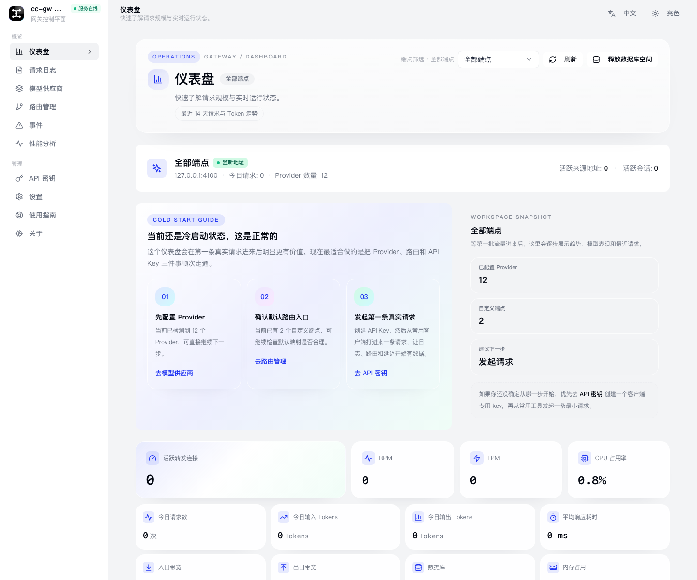
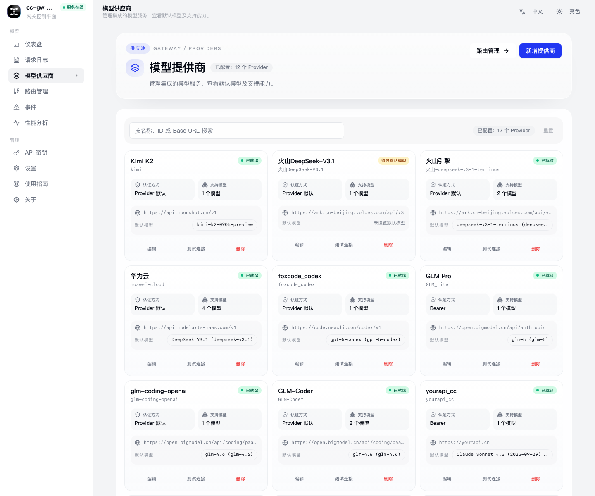
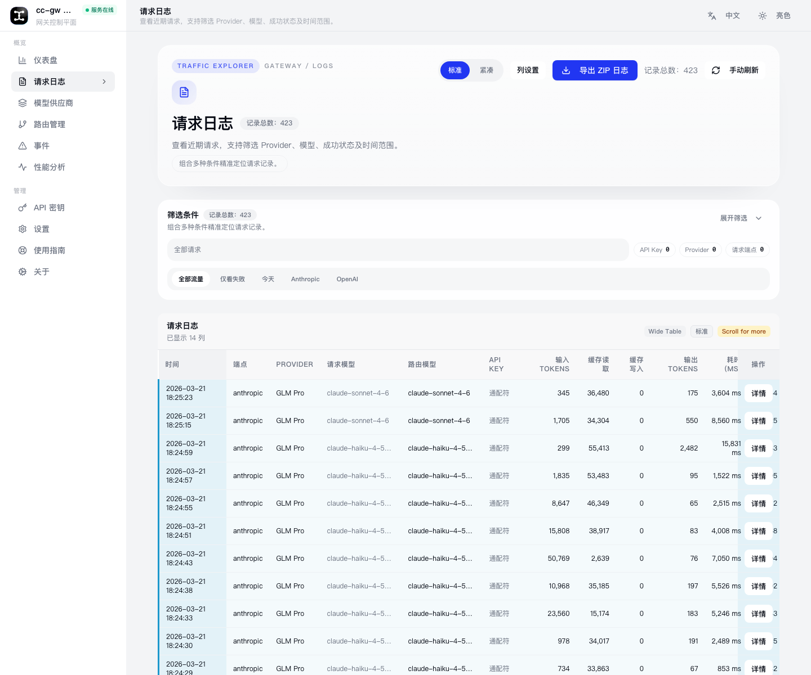

Console Showcase
One place to route, observe, and debug every AI request.
cc-gw keeps the console focused on the work that matters every day: seeing traffic, changing model routing, and tracing failures without digging through each project.

